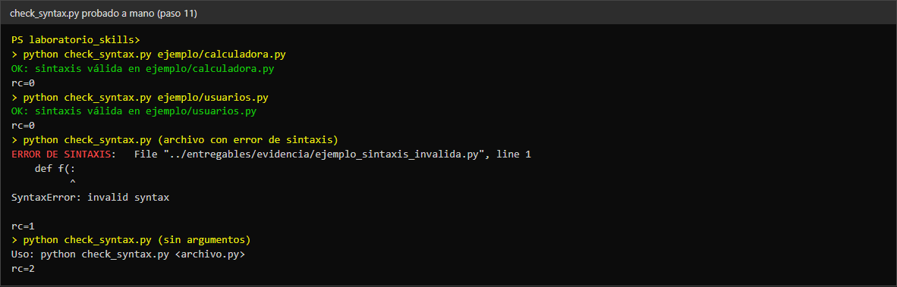
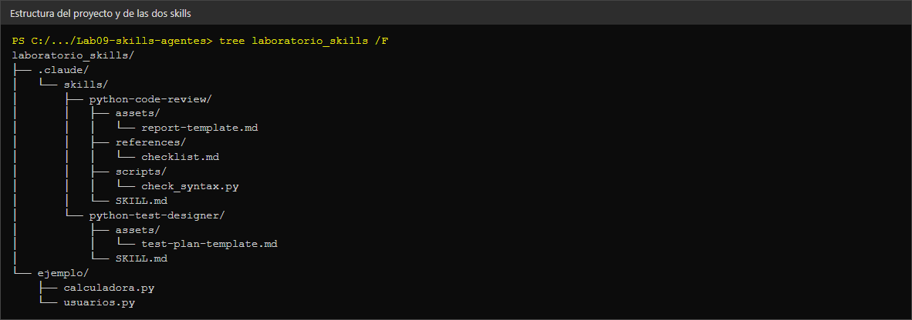
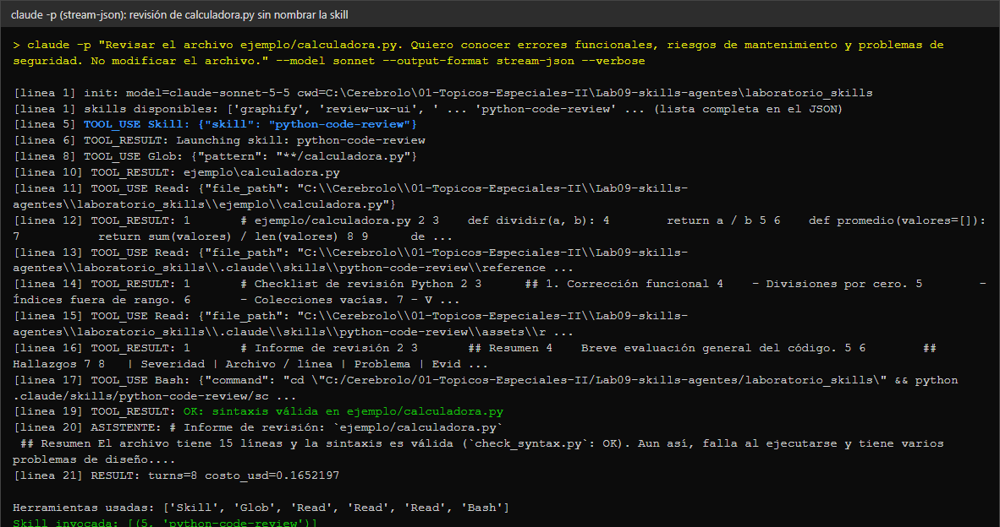
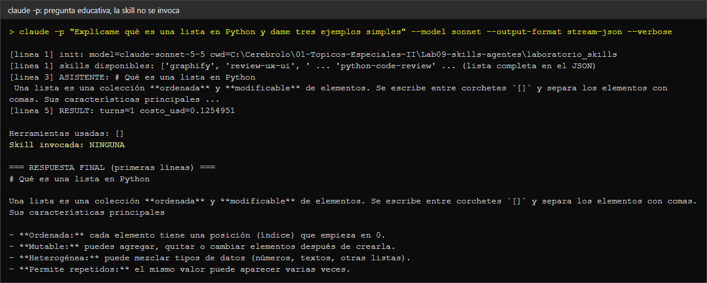
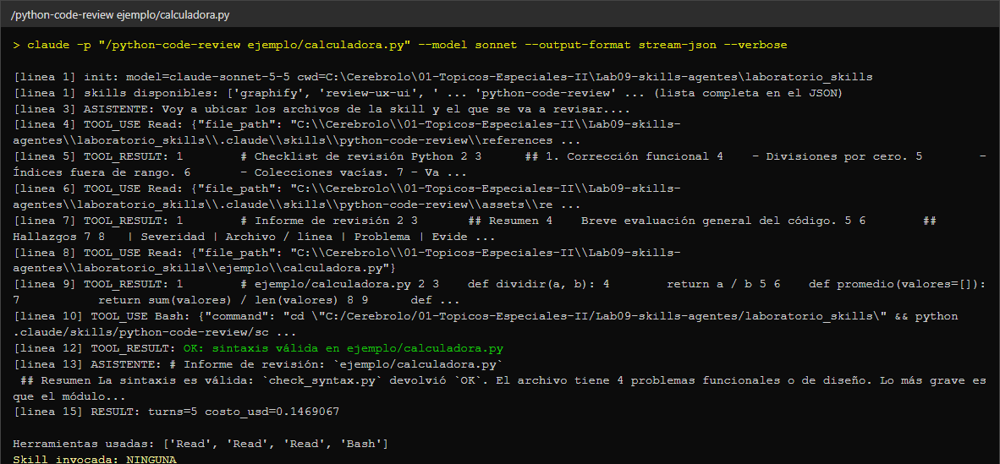
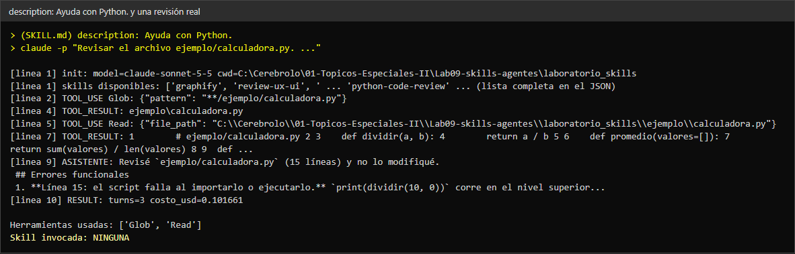
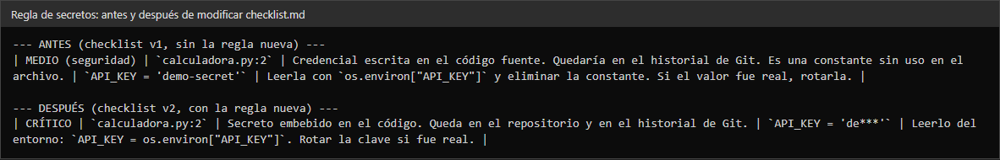
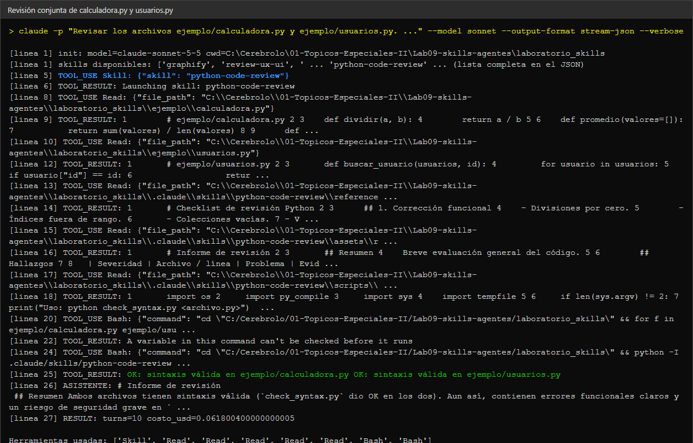
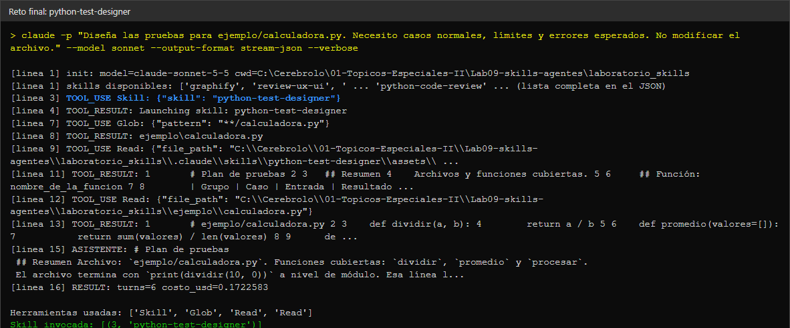
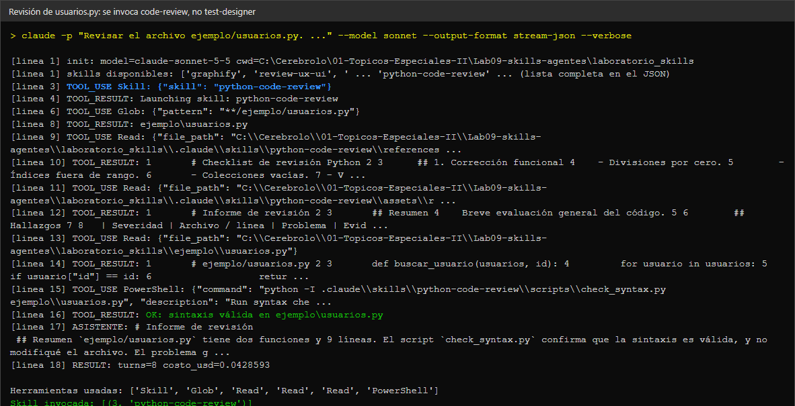

Facultad de Ingeniería de Sistemas Computacionales
Lic. en Desarrollo y Gestión de Software
Tópicos Especiales II
Laboratorio 9 — Skills para agentes de IA
1GS241
Presentado por:
Ríos, Gerald (8-987-741)
Revisado por:
Profesor Regis Rivera
Fecha de entrega
29 / 10 / 2026
Índice
Introducción3
1. Herramienta y entorno3
2. Proyecto de práctica y revisión manual4
3. Construcción de la skill python-code-review4
4. Pruebas de activación5
4.1 Activación correcta sin nombrar la skill6
4.2 Caso donde la skill no debe activarse7
4.3 Activación explícita8
4.4 Descripción demasiado genérica8
4.5 Descripción restaurada y mejorada9
5. Evolución de la skill9
5.1 Regla nueva en el checklist: antes y después9
5.2 Cambio de columnas en la plantilla10
5.3 Verificación final y ajuste del script10
6. Informes generados11
7. Versión portable12
8. Reto final: python-test-designer12
9. Preguntas de reflexión14
Conclusiones16
Referencias Bibliográficas16
Introducción
Este laboratorio pide convertir un procedimiento que normalmente repetiríamos con prompts, la revisión de código Python, en una carpeta portable con instrucciones, recursos y un script de comprobación. Armamos la skill python-code-review tal como la describe el enunciado, la probamos contra dos archivos con defectos conocidos y la modificamos tres veces para ver qué cambia en el resultado. Al final construimos la segunda skill del reto, python-test-designer.
Lo que sigue cuenta lo que hicimos y lo que salió, incluidos dos tropiezos con el script de sintaxis que nos obligaron a ajustar el procedimiento. Todas las ejecuciones con el agente quedaron guardadas como transcripciones JSON completas en la carpeta de evidencia, y las figuras son capturas de esas mismas transcripciones.
1. Herramienta y entorno
El enunciado propone GitHub Copilot en modo Agent dentro de VS Code, con ChatGPT Skills como ruta alternativa. En el equipo donde trabajamos no hay Copilot instalado, así que usamos Claude Code, que implementa el mismo estándar abierto Agent Skills: una carpeta con un SKILL.md obligatorio con frontmatter name y description, y las carpetas opcionales scripts/, references/ y assets/ (Agent Skills, s. f.). La estructura y el contenido de la skill siguen lo que pide el enunciado.
Hay dos diferencias prácticas con el enunciado. Claude Code busca las skills de proyecto en .claude/skills/ y no en .agents/skills/, por lo que la skill vive ahí; el contenido interno no cambia. Y como en modo no interactivo no hay un comando /skills, el descubrimiento lo comprobamos con la lista de skills que aparece en el evento de inicio de cada transcripción. Las pruebas se corrieron con claude -p, el modelo Sonnet y la salida stream-json, que registra cada llamada a herramienta. Dejamos permitidas solo las herramientas necesarias: Skill, Read y la ejecución de check_syntax.py; ninguna de escritura. No se instaló nada en la configuración global del equipo.
No tenemos skills-ref instalado ni probamos la ruta de ChatGPT, que el enunciado marca como opcional.
2. Proyecto de práctica y revisión manual
Creamos la carpeta laboratorio_skills/ejemplo/ con calculadora.py y usuarios.py exactamente como los da el enunciado. Antes de ejecutar nada con el agente, anotamos los defectos que se ven al leer calculadora.py, que sirven de línea base:
La última línea, print(dividir(10, 0)), lanza ZeroDivisionError apenas se ejecuta o importa el módulo.
dividir no controla que b sea cero.
promedio con lista vacía hace len(valores) igual a cero y falla; con el valor por defecto [], llamarla sin argumentos siempre falla.
valores=[] es un parámetro mutable por defecto.
El except: de procesar atrapa cualquier cosa y devuelve 0, de modo que una entrada inválida no se distingue de un cero real.
Corrimos el script del paso 11 a mano contra ambos archivos. Además lo probamos con un archivo con error de sintaxis y sin argumentos para ver sus tres salidas posibles (Figura 1).

Figura 1. check_syntax.py ejecutado manualmente: sintaxis válida, error de sintaxis y uso sin argumentos.
3. Construcción de la skill python-code-review
Creamos las carpetas y los cuatro archivos con el contenido del enunciado: SKILL.md, references/checklist.md, assets/report-template.md y scripts/check_syntax.py. La Figura 2 muestra la estructura final del proyecto, que incluye también la skill del reto.

Figura 2. Estructura del proyecto de práctica con las dos skills.
Para el paso 13 escribimos un pequeño verificador (evidencia/validar_skill.py) en lugar de revisar a ojo. Comprueba que la carpeta se llama igual que name, que el archivo es SKILL.md, que el nombre usa solo minúsculas, números y guiones, que la descripción no pasa de 1024 caracteres y que las rutas a references, assets y scripts existen. Las dos skills pasan todas las comprobaciones; la salida está en evidencia/00_validacion_manual.txt.
4. Pruebas de activación
Todas las pruebas se hicieron desde la carpeta del proyecto. La Tabla 1 resume cada una y señala la línea de la transcripción JSON donde aparece (o falta) la llamada a la herramienta Skill.
Tabla 1. Pruebas de activación de python-code-review.
Prueba
Petición
¿Skill invocada?
Resultado
Activación correcta
Revisar calculadora.py (errores, mantenimiento, seguridad), sin nombrar la skill
Sí, línea 5 de 01_activacion_calculadora.jsonl
Lee checklist y plantilla, corre check_syntax.py y entrega el informe con la plantilla
No debe activarse
«Explícame qué es una lista en Python y dame tres ejemplos simples»
No; el evento result marca un solo turno y cero herramientas
Responde directo con tres ejemplos
Explícita
/python-code-review ejemplo/calculadora.py
No hay llamada Skill: el comando expande la skill directamente
Lee checklist y plantilla, corre el script, entrega informe
Descripción genérica
Misma revisión que la primera, con description: Ayuda con Python.
No
Revisa a su manera: sin script, sin plantilla
Descripción mejorada
Revisión de calculadora.py
Sí, línea 3 de 05b_...jsonl
Flujo completo
Descripción mejorada
Pregunta de la lista
No
Responde directo
4.1 Activación correcta sin nombrar la skill
Usamos la petición del paso 16 casi literal. El modelo llamó a Skill con python-code-review en la línea 5 del JSON, leyó checklist.md y report-template.md, ejecutó check_syntax.py (respuesta OK: sintaxis válida) y entregó el informe sin tocar el archivo (Figura 3). Los cinco defectos de nuestra lista aparecen en ese informe y además aparecieron otros: la falta de validación de tipos, la ausencia de docstrings y pruebas, y el truncamiento silencioso de int() en procesar. Cada hallazgo trae la línea y el fragmento de código que lo respalda, y los comprobamos contra el archivo.

Figura 3. Transcripción de la activación correcta: llamada a la skill, lecturas, script y respuesta.
Una observación: en esta primera ejecución el modelo agregó una columna «Tipo» que la plantilla no tiene. Eso se corrigió más adelante con la verificación final del paso 26.
4.2 Caso donde la skill no debe activarse
Con la pregunta educativa del paso 19 el modelo respondió en un solo turno, sin llamar a ninguna herramienta (Figura 4). La descripción original, que dice «cuando el usuario pida revisar, auditar o evaluar código Python», fue suficiente para no interferir.

Figura 4. Pregunta educativa: ninguna herramienta ni skill invocada.
4.3 Activación explícita
Ejecutamos /python-code-review ejemplo/calculadora.py. Nos costó entenderlo en el primer intento: el shell de Git Bash convirtió /python-code-review en una ruta de Windows y el agente buscó un archivo que no existía. Repetimos la prueba con la conversión de rutas desactivada y funcionó. La transcripción muestra que no hay llamada a Skill, porque el comando ya entrega el contenido de la skill al modelo; aun así siguió el flujo completo (checklist, plantilla, script), como se ve en la Figura 5. El informe resultante fue equivalente al de la activación automática; la diferencia es que no depende de que el modelo decida por la descripción.

Figura 5. Activación explícita con el comando de la skill.
4.4 Descripción demasiado genérica
Cambiamos la descripción a Ayuda con Python. y corrimos cuatro peticiones generales: la pregunta de la lista, pedir una función que sume dos números, una duda sobre convertir cadenas a enteros y una consulta sobre usuarios.py. Esperábamos activaciones incorrectas y no las vimos: la skill no se invocó en ninguna. Lo que sí pasó fue lo contrario. Con la petición de revisión que antes activaba la skill, el modelo ya no la invocó: leyó el archivo y revisó por su cuenta, sin check_syntax.py y sin la plantilla (Figura 6). Con una descripción sin criterio la skill dejó de usarse cuando hacía falta, así que el problema que observamos fue la falta de activación y no la activación indebida. No podemos afirmar con cuatro peticiones que nunca se active de más, pero no lo reprodujimos.

Figura 6. Con la descripción genérica, la revisión no invoca la skill ni el script.
4.5 Descripción restaurada y mejorada
Pusimos la descripción mejorada del paso 22, con la exclusión explícita de enseñar sintaxis y de crear código desde cero. La revisión volvió a invocar la skill (línea 3 de 05b_descripcion_mejorada_revision.jsonl) y la pregunta de la lista siguió sin activarla. Esa es la descripción con la que quedó la versión final.
5. Evolución de la skill
5.1 Regla nueva en el checklist: antes y después
Pusimos temporalmente API_KEY = 'demo-secret' como línea 2 de calculadora.py y corrimos la misma petición dos veces. La primera vez, con el checklist original, la skill ya detectó el secreto porque el checklist tenía «credenciales o secretos en el código», pero lo clasificó como MEDIO y mostró el valor completo. Luego agregamos al checklist una regla específica sobre archivos, claves o tokens embebidos que además fija la severidad en CRÍTICO y pide enmascarar el valor. En la segunda ejecución el hallazgo salió como CRÍTICO, con API_KEY = 'de***' y la propuesta de leerlo de una variable de entorno (Figura 7 y Tabla 2). Quedó una filtración menor: en el resumen final el modelo escribió «demo-secret» al comentar que podía ser solo de ejemplo.

Figura 7. Hallazgo del secreto antes y después de la regla nueva.
Tabla 2. Efecto de la regla nueva (misma petición, mismo modelo).
Antes
Después
Severidad
MEDIO
CRÍTICO
Valor en la evidencia
API_KEY = 'demo-secret'
API_KEY = 'de***'
Corrección
Leerla con os.environ y rotarla si era real
Igual, con la variable de entorno
El modelo es el mismo en las dos ejecuciones; lo único que cambió fue un archivo de texto. Con una sola ejecución por lado no podemos descartar algo de variación entre corridas, pero la diferencia sigue lo que dice la regla nueva. Después de la prueba restauramos calculadora.py a su contenido original; la copia con la clave quedó en evidencia/calculadora_con_API_KEY.py.
5.2 Cambio de columnas en la plantilla
Reordenamos las columnas de report-template.md a Archivo / línea, Severidad, Problema, Corrección y Evidencia. En la ejecución siguiente la tabla del informe salió con ese orden exacto, así que el agente adopta la plantilla que encuentra. Después restauramos el orden original del enunciado.
5.3 Verificación final y ajuste del script
Agregamos la sección «Verificación final» del paso 26 a SKILL.md. La revisión conjunta de los dos archivos (paso 27) nos dio un problema que no esperábamos: en tres ejecuciones seguidas el modelo no corrió check_syntax.py. La primera vez dijo que el script, al usar py_compile, escribe un .pyc en __pycache__ y que habíamos pedido no modificar archivos. En la segunda el comando quedó bloqueado por permisos, en parte por culpa nuestra, porque autorizamos solo la herramienta Bash y el modelo usó PowerShell. La tercera vez, con ambos permisos, el modelo prefirió una comprobación propia con ast por la misma razón de la primera. Las tres transcripciones quedaron en la evidencia (11_, 12_ y 13_).
La causa de fondo era real: el script del enunciado sí deja un archivo en el proyecto revisado, lo que choca con la regla de no modificar nada. Hicimos dos cambios. En SKILL.md el paso 3 ahora dice que es obligatorio y que no modifica nada. Y en el script el bytecode se escribe en una carpeta temporal, de modo que no queda __pycache__; el original se conserva en evidencia/versiones_skill/. Con los dos cambios, la revisión conjunta ejecutó el script sobre ambos archivos (Figura 8).

Figura 8. Revisión conjunta de calculadora.py y usuarios.py con el script ejecutado sobre ambos archivos.
6. Informes generados
Con la skill en su versión final generamos los tres informes, guardados en entregables/informes_generados/: informe_calculadora.md, informe_usuarios.md y informe_conjunta.md. En los tres la tabla usa el orden de columnas de la plantilla original. La revisión conjunta distingue los archivos y las severidades como pedía el paso 27 (Tabla 3).
Tabla 3. Hallazgos del informe de la revisión conjunta.
Severidad
Archivo / línea
Problema
CRÍTICO
usuarios.py:8-9
Ejecución arbitraria de código con eval sobre una entrada sin validar
ALTO
calculadora.py:15
Llamada a nivel de módulo que lanza ZeroDivisionError al importar
ALTO
calculadora.py:3-4
dividir no controla el divisor cero
ALTO
calculadora.py:6-7
promedio falla con lista vacía
MEDIO
calculadora.py:6
Parámetro mutable por defecto
MEDIO
calculadora.py:10-13
except: desnudo que devuelve 0 sin avisar
MEDIO
usuarios.py:3-6
Devuelve None implícito y puede lanzar KeyError si falta la clave id
BAJO
usuarios.py:3
El parámetro id tapa la función integrada
BAJO
ambos
Sin docstrings, tipos ni pruebas
Nos llamó la atención que las severidades no son idénticas entre ejecuciones. El informe individual de usuarios.py clasificó el None implícito como ALTO y el de la revisión conjunta como MEDIO. El checklist solo dice «CRÍTICO, ALTO, MEDIO o BAJO» sin criterios, así que ese margen es de la skill y no del modelo; una mejora sería definir qué entra en cada nivel.
7. Versión portable
Copiamos únicamente la carpeta python-code-review (con SKILL.md, references/, assets/ y scripts/) a entregables/python-code-review/, sin el proyecto de ejemplo. Lo mismo hicimos con python-test-designer. El paquete Lab09_TopicosII_Rios_Gerald.zip contiene las dos skills, el proyecto de práctica, los informes generados y la evidencia.
8. Reto final: python-test-designer
La segunda skill tiene un SKILL.md y una plantilla de plan de pruebas. Su descripción dice que se usa al diseñar pruebas para código Python y excluye revisar la calidad, depurar o explicar sintaxis. Pide casos normales, límites y errores esperados, con entrada y resultado concretos, y le prohíbe revisar o ejecutar nada. La mantuvimos separada de la primera a propósito.
Con «Diseña las pruebas para ejemplo/calculadora.py…» se invocó python-test-designer (línea 3 de 17_test_designer_activacion.jsonl) y produjo un plan con las tres funciones y los tres grupos de casos, con observaciones donde el comportamiento actual difiere del esperado (Figura 9). Con la petición de revisión de usuarios.py se invocó python-code-review y no la de pruebas (línea 3 de 18_test_designer_no_activa_review.jsonl, Figura 10).

Figura 9. Activación de python-test-designer al pedir pruebas.

Figura 10. Una petición de revisión invoca python-code-review y no python-test-designer.
Probamos también una petición que combinaba las dos: «Revisa usuarios.py y luego diseña las pruebas que necesitaría». La primera vez que la intentamos se agotó el límite de uso de la herramienta de línea de comandos y la repetimos después. Se invocó solo python-test-designer (línea 5 de 19_combinadas.jsonl); la revisión no pasó por python-code-review y el script de sintaxis no se ejecutó, de modo que el resultado fue únicamente el plan de pruebas. Es decir, las skills quedan bien separadas, pero el agente no las encadenó por sí solo. Para combinarlas habría que pedir los dos pasos en peticiones distintas o nombrarlas.
9. Preguntas de reflexión
1. ¿Qué diferencia existe entre una Skill y un prompt guardado? Un prompt guardado es texto que el usuario pega cada vez. Una skill es una carpeta que el agente descubre por sí mismo, que carga solo si la tarea lo pide y que trae junto al texto sus plantillas y scripts. En la primera prueba no nombramos la skill y el agente la encontró.
2. ¿Qué función cumplen name y description antes de cargar el contenido completo de SKILL.md? Son lo único que el agente ve de todas las skills al arrancar (Agent Skills, s. f.). Con eso decide si alguna le sirve para la petición, y solo después carga el cuerpo de SKILL.md. Por eso la descripción es la parte más sensible, como vimos con «Ayuda con Python.».
3. ¿Por qué conviene mover información extensa a references en lugar de poner todo en SKILL.md? Porque el cuerpo de SKILL.md se carga entero cada vez que la skill se activa, y los archivos de references/ solo cuando hacen falta. Se mantiene corto lo que siempre se lee y el checklist puede crecer sin gastar contexto en peticiones que no lo necesitan. Además, editar una regla en checklist.md bastó para cambiar el informe sin tocar el flujo.
4. ¿Qué ventaja aporta incluir scripts en una skill? Una comprobación determinista que no depende de la opinión del modelo: check_syntax.py responde OK o error igual cada vez, y deja constancia en la transcripción de que se ejecutó. El costo, que vimos, es que el script tiene efectos y permisos que hay que pensar: el __pycache__ y la aprobación de comandos nos frenaron tres ejecuciones.
5. ¿Por qué una descripción demasiado genérica puede ser un problema? Porque no le da al agente criterio para decidir. En nuestra prueba, con «Ayuda con Python.» el agente dejó de usar la skill ante una revisión de código real. También puede ocurrir lo opuesto, que se active en tareas que no le corresponden; eso no lo reprodujimos, aunque el enunciado lo plantea.
6. ¿Qué diferencia existe entre una Skill, un MCP Server y un Agent? Una skill es conocimiento y procedimiento empaquetado en archivos: enseña cómo hacer una tarea. Un servidor MCP expone herramientas o datos externos a los que el modelo puede conectarse, por ejemplo una base de datos o una API. Un agente es el sistema que razona, planifica y usa herramientas para cumplir un objetivo, y puede apoyarse en skills y en servidores MCP. Aquí el agente fue Claude Code y la skill, la carpeta que le dimos.
7. ¿Por qué una skill puede versionarse y revisarse como código? Porque es una carpeta de archivos de texto. Se puede guardar en Git, comparar versiones y revisar los cambios antes de aceptarlos. Nosotros lo hicimos a pequeña escala: guardamos cada versión de SKILL.md, del checklist, de la plantilla y del script en evidencia/versiones_skill/, y los cambios se ven con un diff.
Conclusiones
La skill python-code-review funcionó como la describe el enunciado: el agente la encontró sin que la nombráramos, siguió su flujo, ejecutó el script y entregó el informe con la plantilla. Los cinco defectos de nuestra revisión manual aparecieron en el informe, junto con otros que no habíamos anotado. No se activó con una pregunta educativa. Las pruebas de la regla de secretos y del orden de columnas mostraron que cambiar un archivo de texto cambia el resultado sin tocar el modelo.
Lo que más costó fue el script de sintaxis. El del enunciado escribe en __pycache__, y eso chocaba con pedir una revisión sin modificar nada; tres ejecuciones seguidas lo esquivaron y tuvimos que ajustar tanto SKILL.md como el script. También esperábamos que la descripción genérica provocara activaciones indebidas y vimos lo contrario, y con pocas pruebas no sacamos una conclusión general. La activación explícita no aparece como llamada a Skill en la transcripción, algo que no esperábamos. La petición combinada activó solo la skill de pruebas y no encadenó la revisión. No probamos la ruta de ChatGPT ni la validación con skills-ref. Además, los niveles de severidad varían un poco entre corridas porque el checklist no define criterios, y eso queda como mejora pendiente.
Referencias Bibliográficas
Agent Skills. (s. f.). Specification. Recuperado el 29 de octubre de 2026, de https://agentskills.io/specification